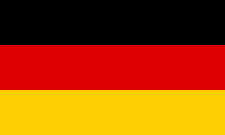
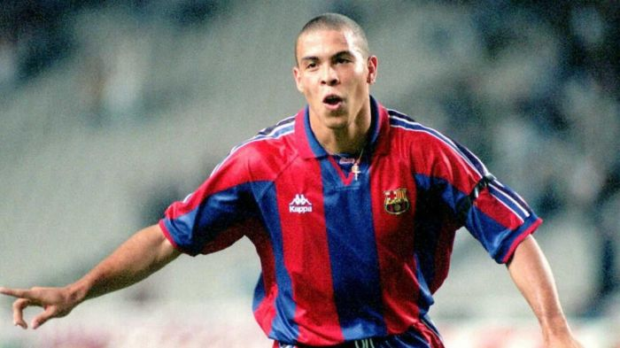

 Matthias SAMMER - 1996
- Le grand patron
Matthias Sammer
remporte en 1996 le Ballon d'or à 29 ans.
Nationalité : Allemande
Né le : 5 septembre 1967, à Dresde (ALL)
Taille : 1,82
Poids : 79 kg
Poste : milieu, défenseur
Clubs : TSG Gröditz, SC Einheit Dresde, Dynamo Dresde (1985-1990), VfB Stuttgart (1990-1992), Inter Milan (juillet-décembre 1992) et Borussia Dortmund (janvier 1993-1998)
Palmarès : Championnat d'Europe des nations 1996 (finaliste 1992) ; Ligue des champions 1997 ; Championnat de RDA 1989 et 1990 ; Championnat d'Allemagne 1992, 1995 et 1996 ; Coupe de RDA 1990 ; Supercoupe d'Allemagne 1995 et 1996 ; Championnat d'Europe Juniors 1986
Bilan en club : 337 matchs, 87 buts
Bilan en équipe nationale : 23 sélections A, 6 buts en équipe de RDA (1986-1990) ; 51 sélections A, 8 buts en équipe d'Allemagne (1990-1997)
Bilan en phase finale de Coupe du monde : 1 participation, 4 matches (1994)
Palmarès Ballon d'Or : vainqueur 1996
Classement du Ballon d’Or France Football 1996 :
Matthias Sammer (Allemagne / Borussia Dortmund),
144 pts.

Ronaldo (Brésil / FC Barcelone),
141 pts.
Alan Shearer (Angleterre / Newcastle),
109 pts.
Retour à l'accueil